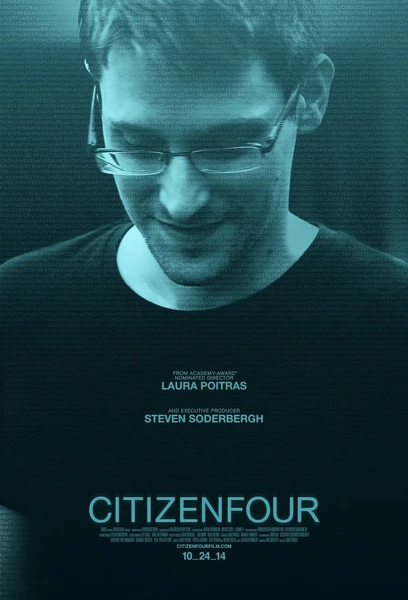

Документальный · 2014 · Биография
Документальный фильм Лоры Пуатрас, снятый в мотеле Гонконга во время первых интервью со Сноуденом. Прямой репортаж изнутри величайшей утечки о слежке.
Laura Poitras' documentary shot in a Hong Kong hotel during the first interviews with Snowden. A direct account from inside the greatest surveillance leak.
← Вернуться в каталог IT Movies